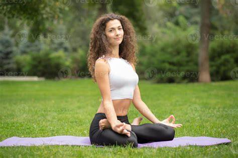
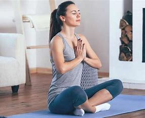
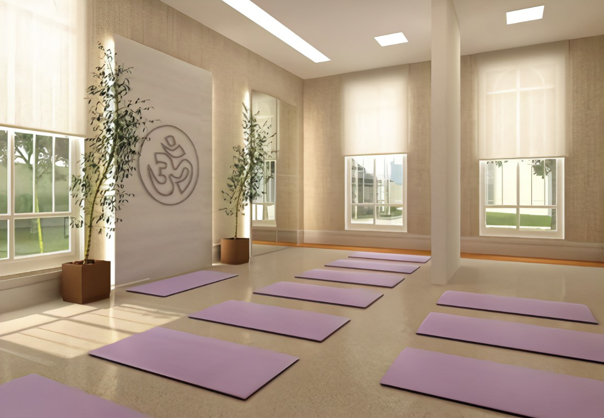

¿Quiénes somos?
-

Manuela es profesora hace 5 años, está formada en Yoga Vedanta, línea Sivananda. Luego siguió su formación en Vinyasa Yoga, y por último se formó también en Ashtanga. A su vez es Lic. en Psicología, por lo que comparte terapias alternativas, fusionando estas dos disciplinas.
-

Sheila es profesora hace 8 años. Su primera formación fue como entrenadora personal, a lo que se dedicó los primeros años. Luego conoció el pilates, disciplina en la cual se formó, y ahora imparte sus clases. Posteriormente se formó en Yoga integral, Hatha Yoga y Ashtanga Yoga.
-

Sheila es profesora hace 8 años. Su primera formación fue como entrenadora personal, a lo que se dedicó los primeros años. Luego conoció el pilates, disciplina en la cual se formó, y ahora imparte sus clases. Posteriormente se formó en Yoga integral, Hatha Yoga y Ashtanga Yoga.